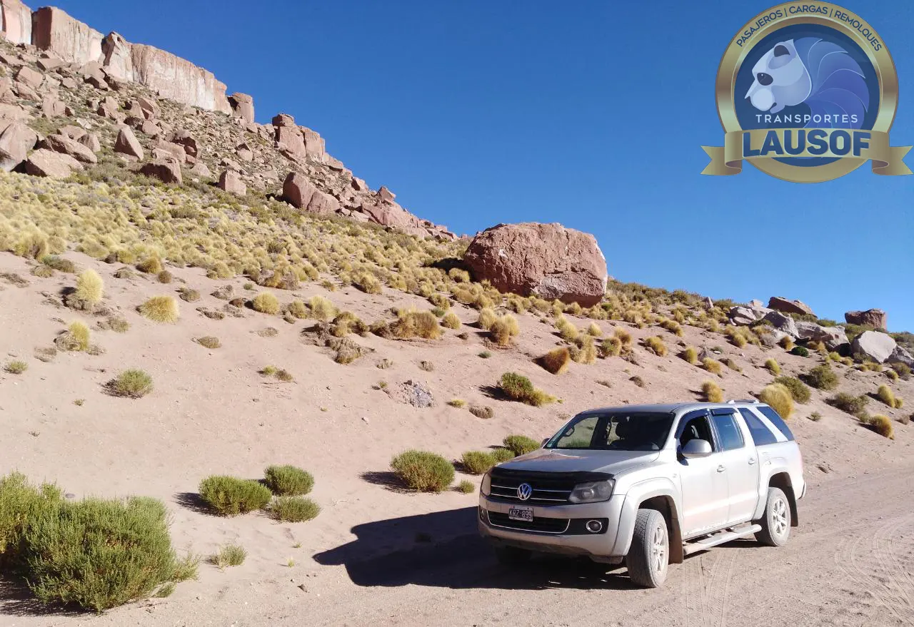
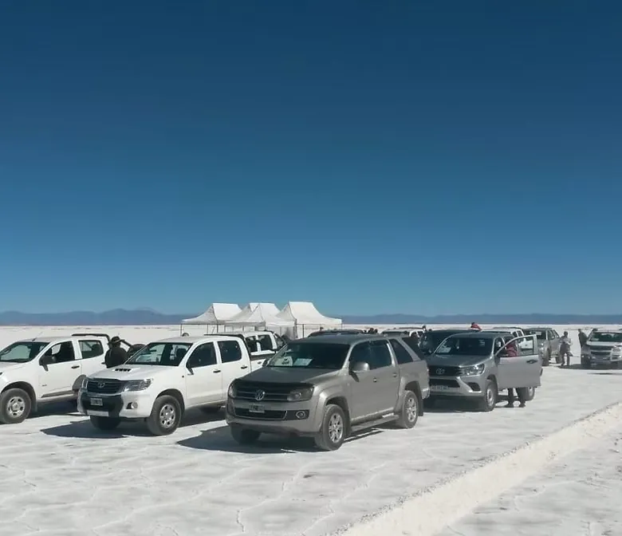
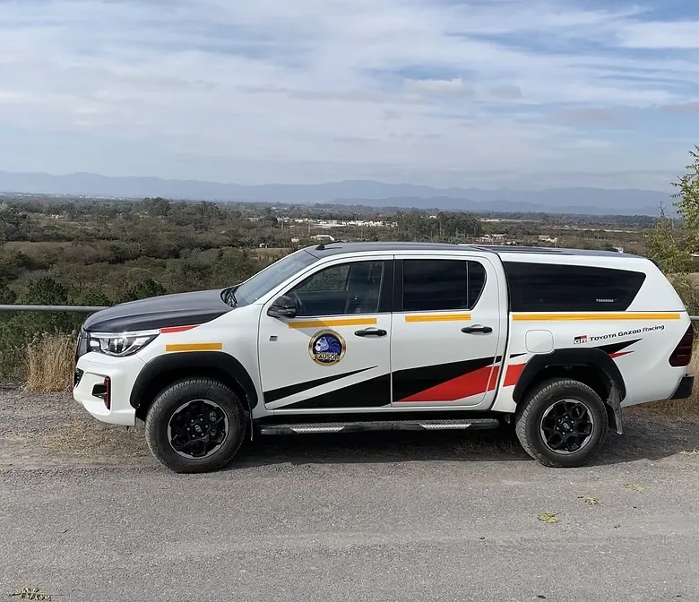

Alquiler de camionetas 4x4
Alquiler de camionetas 4x4 en Salta
Camionetas 4x4 con o sin chofer, para viajeros y para empresas. Unidades preparadas para ripio y altura, mantenidas en nuestro propio taller, para recorrer la Puna, la Ruta 40 o cruzar a Chile y Bolivia.
El servicio
Una 4x4 para el viaje o para la operación
Operamos en la Puna desde hace más de una década: conocemos el ripio, la altura y lo que le exige a una camioneta. Alquilamos las mismas camionetas que usamos en esa operación, mantenidas por los mismos mecánicos, a quien viaja por su cuenta y a quien trabaja en la zona.
Una 4x4 sin chofer para recorrer el norte a su ritmo: Puna, Ruta 40, Salinas Grandes, o un cruce a San Pedro de Atacama o a Uyuni.
La misma camioneta con un chofer que conoce los caminos de altura, para quien prefiere no manejar en ripio ni pensar en la ruta.
Unidades 4x4 por mes para operar en la Puna, con una empresa que conoce los requisitos de ingreso a mina.
Movilidad para cuadrillas, supervisores y trabajo de campo, por el plazo del proyecto y sin inmovilizar capital en flota propia.
Las unidades
Camionetas 4x4 mantenidas en taller propio
Nuestro taller nació para mantener la flota: las camionetas se revisan y se reparan con nuestro propio equipo mecánico, no tercerizado. Menos días parados por rotura.



Rutas típicas
Por dónde se usa una 4x4 en el norte
Estos son los recorridos que más se hacen con nuestras camionetas. Varios tienen tramos de ripio y pasan los 4.000 metros: antes de salir conviene revisar el estado de las rutas nacionales que publica Vialidad Nacional.
| Recorrido | Qué hay que saber |
|---|---|
| Ruta 40: Valles Calchaquíes, Cachi y Cafayate | Largos tramos de ripio entre pueblos; la Ruta 40 sube a la Puna por San Antonio de los Cobres |
| Salinas Grandes y Purmamarca | Ruta Nacional 52 por la Cuesta de Lipán, por encima de los 4.000 metros |
| Puna salteña: San Antonio de los Cobres y Tolar Grande | Ruta Nacional 51 y Ruta Provincial 27, con largos tramos sin señal de celular |
| Chile: San Pedro de Atacama | Por el Paso de Jama (Ruta Nacional 52, Jujuy) o el Paso de Sico (Ruta Nacional 51, Salta) |
| Bolivia: Uyuni | Por La Quiaca y Villazón, al final de la Ruta Nacional 9 |
Para viajeros del exterior
Licencia, documentos y cruces de frontera
Lo que piden las autoridades argentinas, chilenas y bolivianas a quien maneja un vehículo alquilado, según sus propias páginas oficiales.
La licencia de un país adherido a las convenciones de Ginebra (1949) o de Viena (1968) es válida en la Argentina hasta un año desde el ingreso. Si el país de origen no emite una licencia nacional, hace falta el permiso internacional para conducir, que vale un año desde su emisión. Fuente: argentina.gob.ar
Recomendamos traerlo aunque la licencia sea válida: no la reemplaza, la acompaña, y facilita cualquier control de tránsito. Se tramita en el país de origen antes de viajar.
Pasaporte con el sello de ingreso a la Argentina, o documento de identidad válido para circular por el MERCOSUR.
Para salir con un vehículo alquilado, la Aduana argentina pide la licencia vigente y la Autorización para Circulación en el MERCOSUR (ACM), que emite la empresa que alquila para el paso elegido. Al entrar, Chile pide un seguro de accidentes personales para vehículos con patente extranjera y admite el vehículo hasta 90 días. Fuente: ARCA · Aduana de Chile
La Aduana argentina pide el formulario de salida temporal del vehículo y la autorización del titular para que salga del país. Fuente: ARCA
Como titulares de la camioneta, gestionamos la autorización para que salga del país. Por eso el paso de frontera y las fechas se definen al reservar.
Qué incluye
Qué incluye el alquiler
El precio se cotiza según el plazo, la modalidad (con o sin chofer) y el terreno por donde va a circular la camioneta. El presupuesto va por escrito, con las condiciones claras desde el primer día.
Preventivo y correctivo en nuestro propio taller, con mecánicos propios. La unidad se atiende acá, en Salta.
GPS en las unidades en servicio, durante todo el alquiler.
Para destinos sin cobertura, se puede sumar conexión satelital Starlink a pedido.
Coordinamos la entrega y la devolución de la unidad en Salta, en el lugar y las fechas que acordemos.
Plazo, kilometraje y condiciones de uso quedan definidos en el contrato, sin costos ocultos.
Cómo reservar
De la consulta a la entrega, en cuatro pasos
Un mensaje por WhatsApp o por correo con las fechas, el lugar de entrega y devolución, el recorrido, si es con o sin chofer y si hay cruce a Chile o Bolivia.
Respondemos con el presupuesto por escrito y las condiciones del alquiler.
Se firma el contrato y se envían los datos de quienes van a manejar: licencia y pasaporte o documento. Si hay cruce de frontera, preparamos la autorización de salida.
Entregamos la camioneta en Salta, revisada en nuestro taller y lista para el camino.
Qué pedimos
Qué pedimos para alquilar
Viajeros: pasaporte o documento, licencia de conducir vigente de cada persona que vaya a manejar, y el contrato de alquiler firmado, con las condiciones de uso y la cobertura de seguro correspondiente a la modalidad. En el alquiler con chofer, la camioneta la maneja nuestro chofer y no hace falta licencia.
Empresas: CUIT vigente, el contrato de alquiler firmado con las condiciones de uso, y la cobertura de seguro correspondiente a la modalidad. Somos Lausof S.R.L., CUIT 30-71146774-9, y emitimos factura A, con los datos que pide el alta de proveedor. Si compras necesita algún dato más, escribinos a contacto@lausof.com.
Preguntas frecuentes
Lo que nos preguntan antes de alquilar
¿El alquiler es con o sin chofer?
Las dos cosas. Sin chofer, la camioneta la manejan los conductores que figuren en el contrato. Con chofer, viaja con uno de nuestros choferes, que conoce los caminos de ripio y altura. Si lo que necesita una empresa es el traslado resuelto, también ofrecemos logística minera, transporte de personal y turismo en Salta y Jujuy.
¿Alquilan a turistas extranjeros?
Sí. Alquilamos a viajeros del exterior y del país, por el plazo del viaje. Para manejar alcanza con la licencia del país de origen si es válida en la Argentina; recomendamos traer también el permiso internacional para conducir.
¿Se puede cruzar a Chile o a Bolivia con la camioneta?
Sí. Hay que avisarlo al reservar, con el paso de frontera y las fechas, porque la autorización para que el vehículo salga del país la gestionamos nosotros como titulares antes de la entrega.
¿Quién hace el mantenimiento?
Nosotros, en nuestro propio taller de Salta y con mecánicos propios. El mantenimiento está incluido en el alquiler: la unidad se revisa antes de cada entrega y, en los alquileres largos, según el plan acordado.
¿Emiten factura A?
Sí. Somos Lausof S.R.L., CUIT 30-71146774-9, y emitimos factura A.
¿Una 4x4 para el viaje o para la operación?
Contanos las fechas, por dónde va a circular la camioneta y si es con o sin chofer. Te respondemos con el presupuesto por escrito, con las condiciones claras.